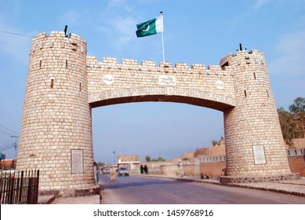
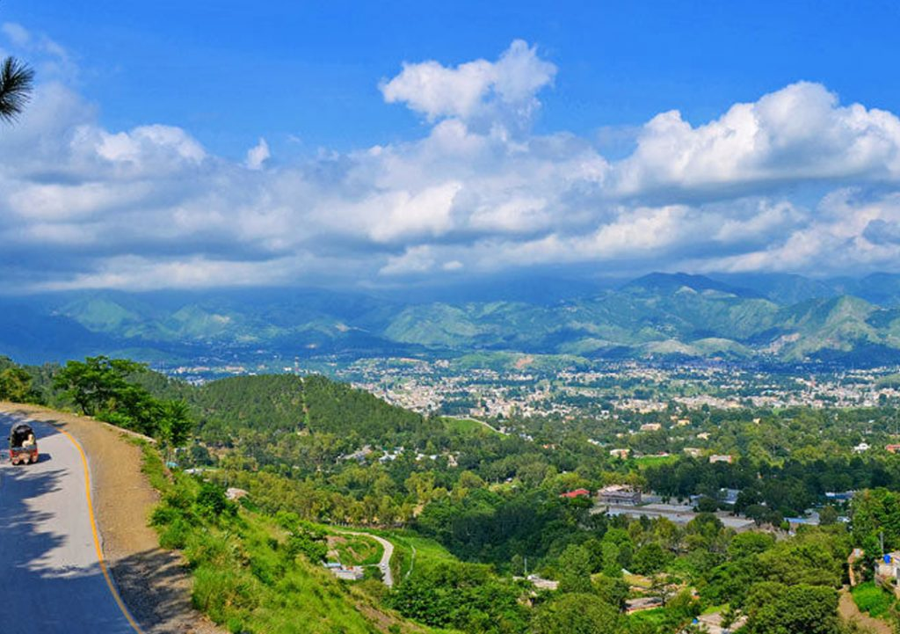
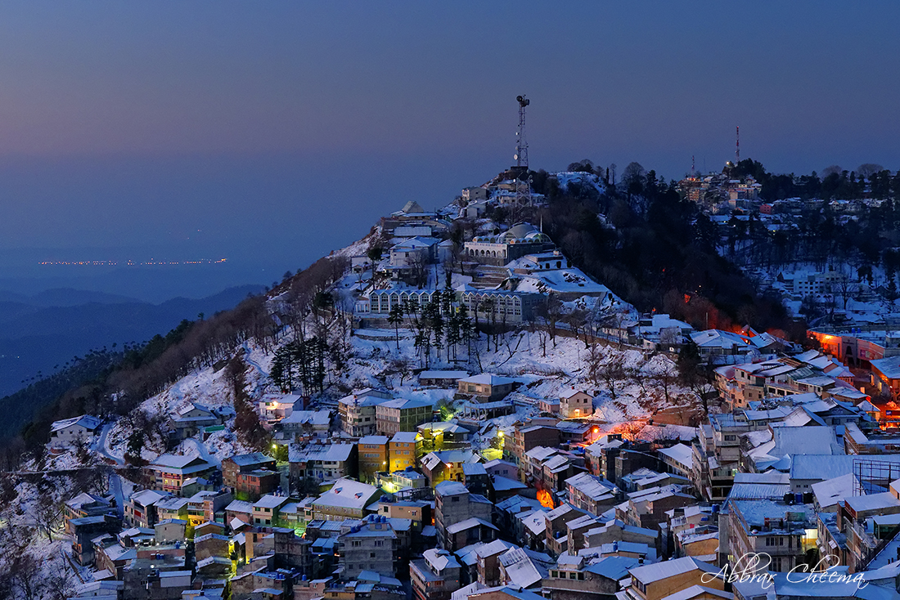
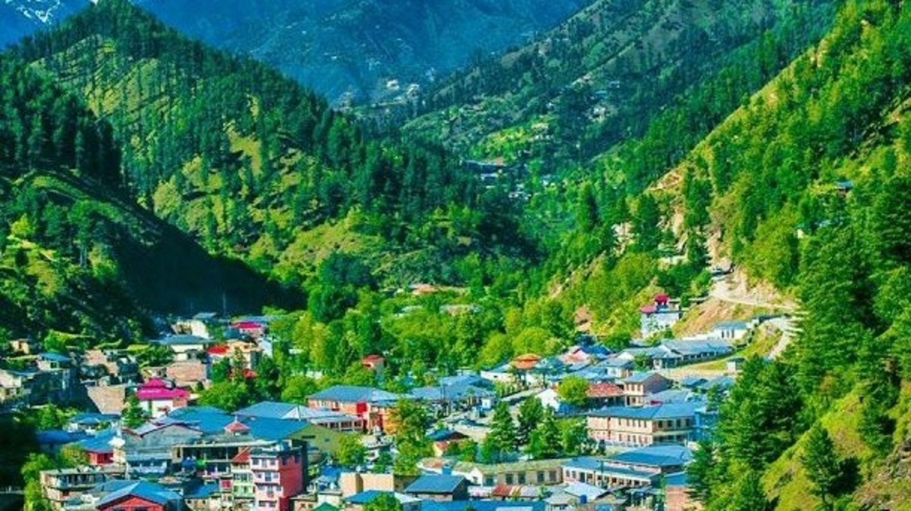
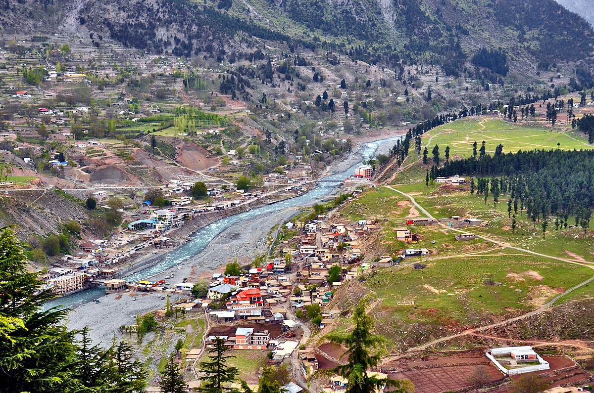

Now we will guide you about the destinations which are worth to visit in KPK, Pakistan.
PESHAWAR

Peshawar, often referred to as the "City of Flowers," is the provincial capital of Khyber Pakhtunkhwa in Pakistan. This historic city is a melting pot of diverse cultures,
with a rich heritage dating back centuries. Peshawar's bustling markets, such as the Qissa Khwani Bazaar, offer a vibrant array of local goods, spices, and handicrafts. Visitors can explore historical landmarks like the Bala Hisar Fort and the Peshawar Museum, which house relics from the region's storied past. Peshawar's warm hospitality, delicious cuisine, and proximity to the Khyber Pass make it a unique and captivating destination for travelers.
ABBOTTABAD

Abbottabad, a serene town in Pakistan's Hazara region, is a gateway to the stunning hill stations of the Galyat range. Nestled amidst lush pine forests and pristine landscapes,
Abbottabad offers respite from the hustle of urban life. Known for its mild climate, it's a popular base for trekkers and nature enthusiasts heading to nearby peaks like Mukshpuri and Miranjani. The town is also recognized for its historic architecture, including the Abbottabad Church and Ilyasi Mosque. With its natural beauty and cultural charm, Abbottabad beckons travelers seeking a peaceful escape.
NATHIA GALI
Nathia Gali, nestled in the picturesque Galyat range of Pakistan, is a haven for nature lovers and adventure seekers. Its dense pine forests, cool climate, and serene ambiance make it an ideal escape from the city's hustle and bustle.
The town is famous for its scenic hiking trails, with the Mukshpuri and Miranjani treks offering breathtaking panoramic views. Nathia Gali Church, a historical British-era landmark, adds to its charm. This destination invites travelers to unwind in the lap of nature while exploring the beauty of the Himalayan foothills.
MURREE

Murree, a renowned hill station in Pakistan, is a scenic paradise characterized by lush green hills, dense forests, and a cool climate. It's a popular retreat for both locals and tourists, offering opportunities for hiking, horse riding,
and snow-related activities in the winter. The Mall Road, a vibrant commercial street, features shops, restaurants, and stunning views. Murree's historical landmarks, like Pindi Point and Kashmir Point, provide panoramic vistas of the surrounding mountains. Whether for a summer escape or a winter wonderland experience, Murree captivates visitors with its natural beauty and recreational opportunities.
SWAT

Swat, often referred to as the "Switzerland of Pakistan," is a breathtaking valley in the Khyber Pakhtunkhwa province. This region is renowned for its lush green landscapes, meandering rivers, and snow-capped peaks, making it a paradise for nature enthusiasts. Swat offers a rich cultural heritage, with historical Buddhist relics and a warm,
hospitable community. Popular attractions include Malam Jabba for winter sports, Mingora for shopping, and Udegram for its stunning lake. Swat Valley is a captivating destination, offering a blend of natural beauty and cultural experiences.
KALAM

Kalam, nestled in the picturesque Swat Valley of Pakistan, is a serene mountain town renowned for its captivating natural beauty. Surrounded by towering peaks, lush forests, and crystal-clear rivers, it's a paradise for hikers and nature lovers. The Ushu Forest, Mahodand Lake, and Matiltan Waterfall are among the many scenic attractions in Kalam.
The region also boasts cultural richness, with a blend of Pashtun and Kohistani traditions. Kalam is a sought-after destination for those seeking tranquility, adventure, and the chance to immerse in the pristine landscapes of the Swat Valley.
NARAN
Naran, nestled in the Kaghan Valley of Pakistan, is a captivating destination known for its stunning natural beauty. Surrounded by towering peaks, lush forests, and pristine lakes, it's a haven for trekking and adventure enthusiasts. The turquoise waters of Lake Saif-ul-Mulook and Lulusar Lake are among the most iconic attractions.
Naran is also a gateway to Babusar Top, a high mountain pass, offering breathtaking vistas. With its cool climate and scenic landscapes, Naran is a popular retreat for those seeking respite and exploration in the heart of the Himalayas.
LOCAL TIPS
Sample local dishes but be cautious with street food to avoid stomach issues. Stick to bottled water and beverages, and make sure that cooked food is served hot.
The weather in the north can change rapidly, especially in the mountains. Bring appropriate clothing, including warm layers, rain gear, and sturdy shoes. Check the weather forecast and road conditions before traveling.
The northern areas are culturally diverse, and respecting local customs is essential. Dress modestly, ask for permission before taking photos, and be aware of local traditions and etiquettes.
Consider hiring local guides for treks and excursions, as they are knowledgeable about the area and can enhance your experience.
Ensure you have all necessary permits if required for certain areas. Keep your travel documents, identification, and essential contact numbers secure and accessible.